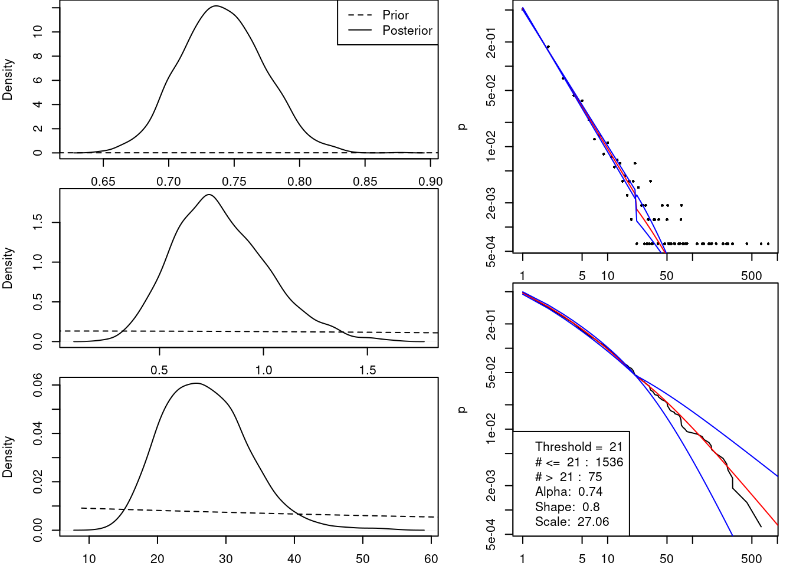
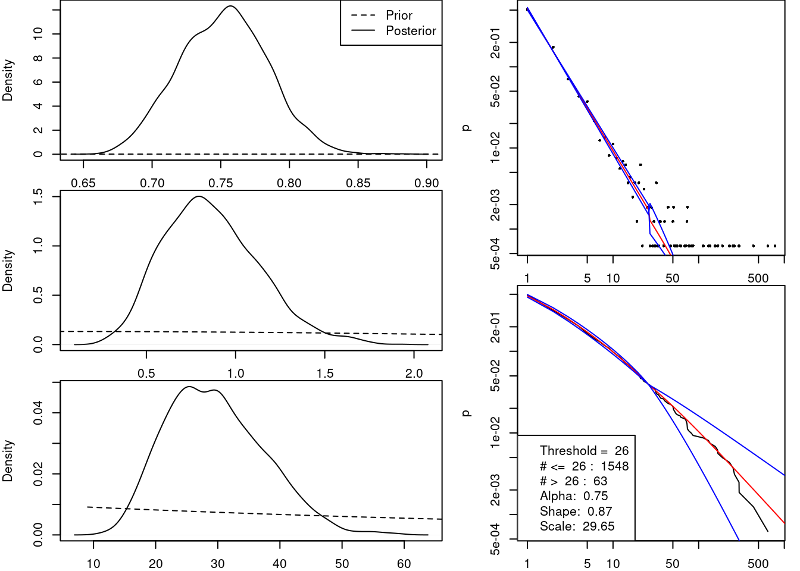
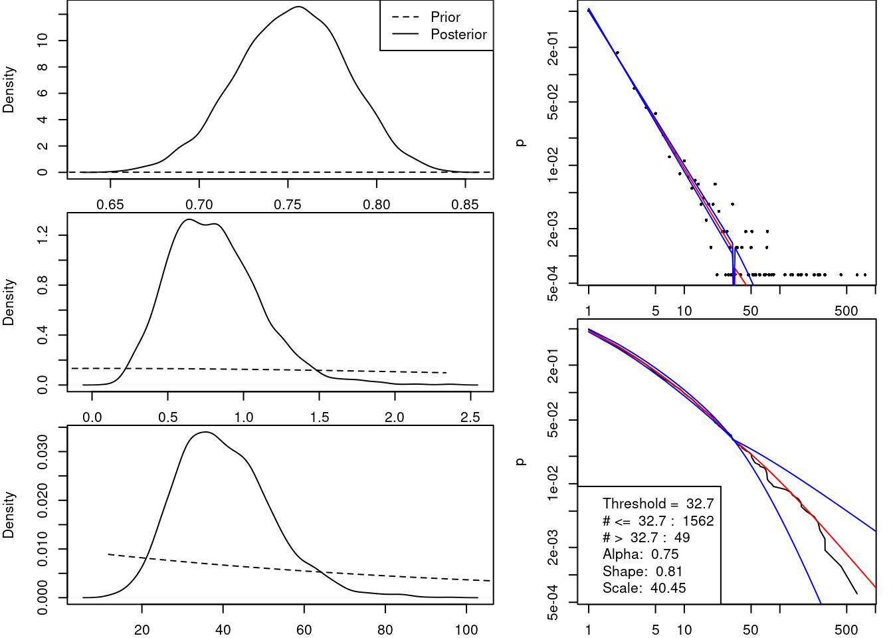
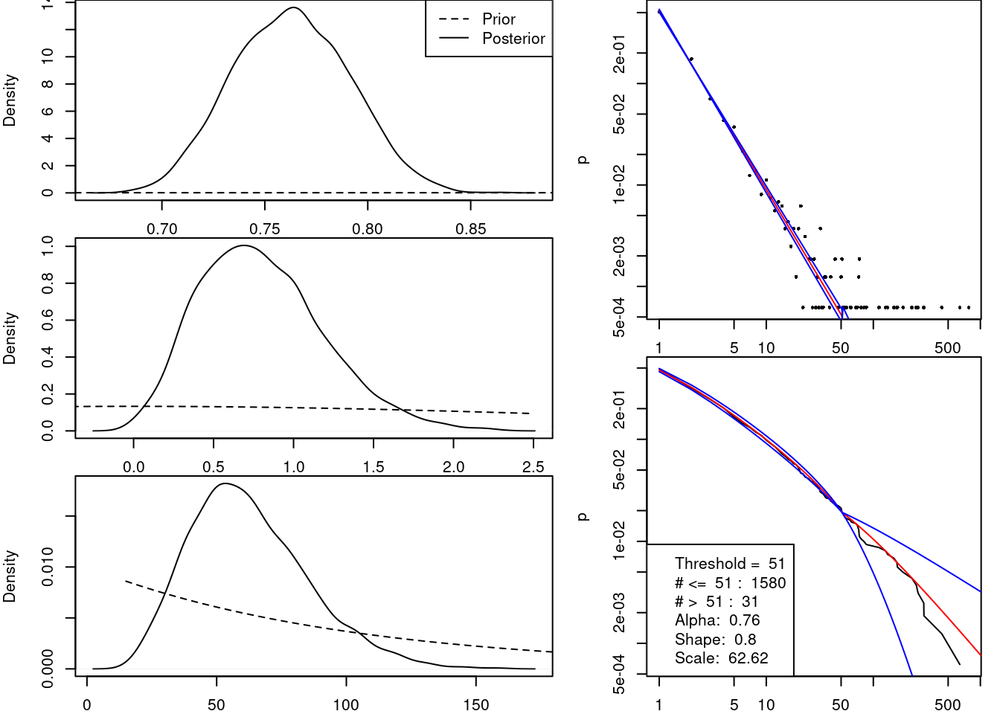
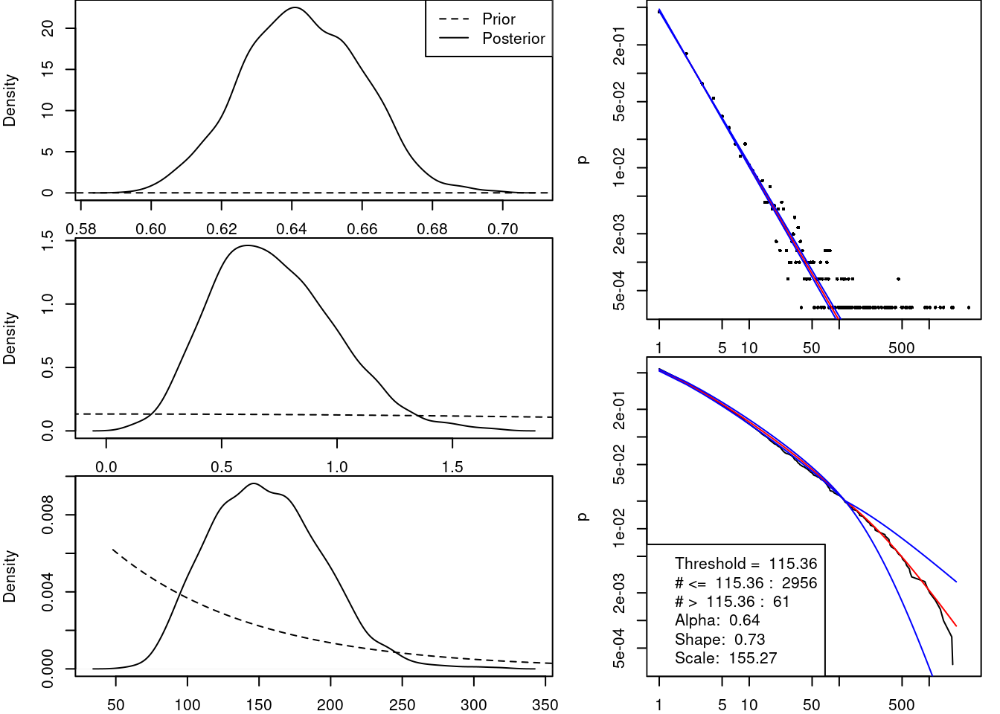
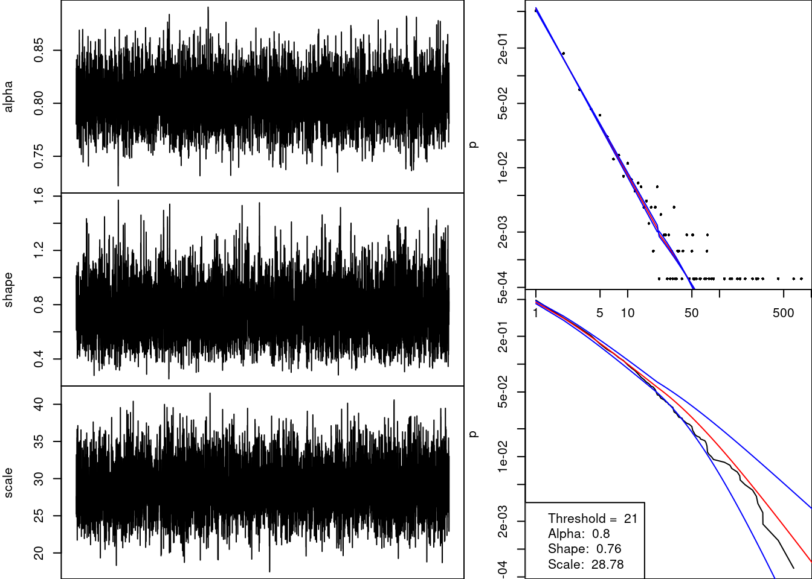
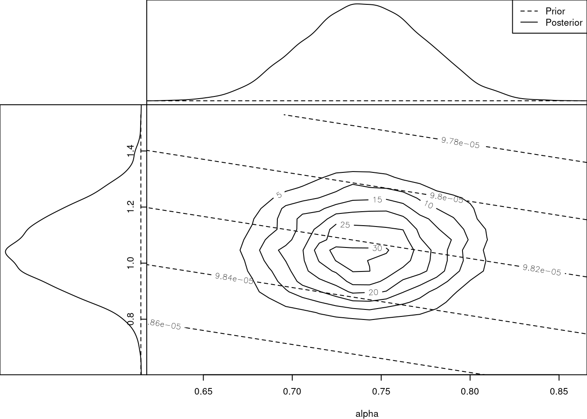
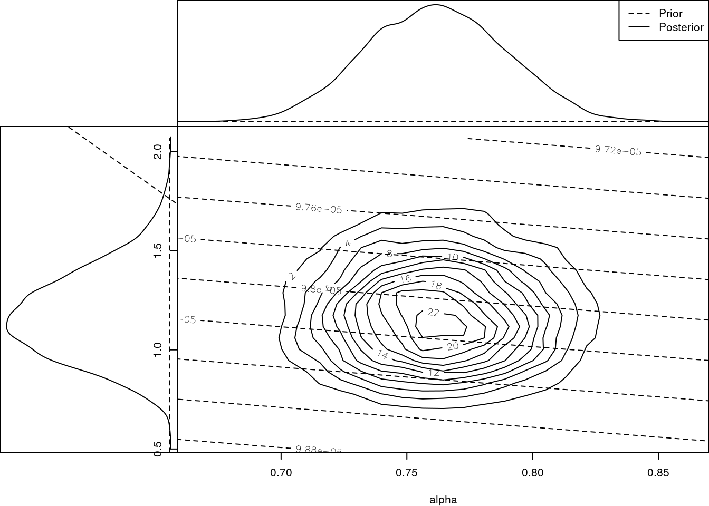
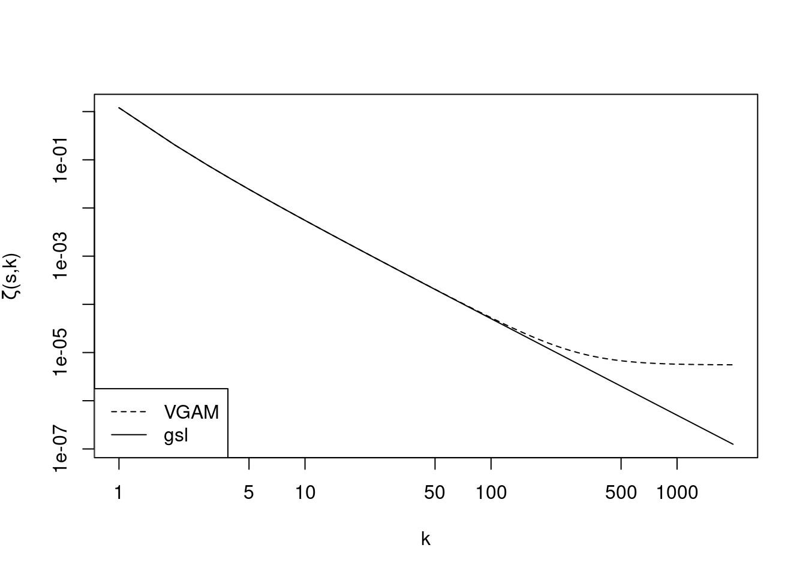
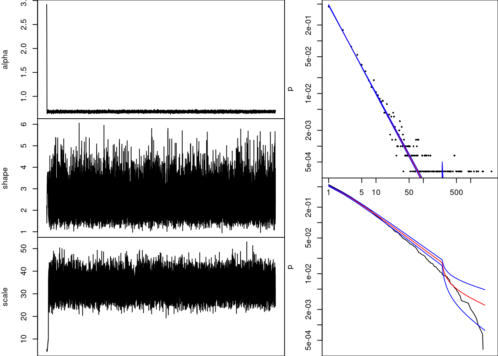

CRAN
Zeta Model
We first consider modelling our data using the zeta model which is a power law model that has p.m.f:
\[ f(x) = \zeta(\alpha+1)^{-1}x^{-(\alpha+1)}, \qquad x=1,2,3,\ldots \]
and has survival function:
\[ S(x) = 1-\zeta(\alpha+1)^{-1}\sum_{k=1}^x k^{-(\alpha+1)}, \qquad x=1,2,3,\ldots \]
If we have a vector of data \(x = (x_1,x_2,\ldots,x_N)^T\) , then the likelihood function and log-likelihood functions are:
\[ L(x) = \zeta(\alpha+1)^{-N}\prod_{i=1}^N x_i^{-(\alpha+1)} \]
and,
\[ \ell(x) = -N\log\zeta(\alpha+1) - (\alpha+1)\sum_{i=1}^N\log x_i \]
We now aim to fit this model using a Metropolis-Hastings algorithm, which means we need to put a prior on to the value of \(\alpha\). Since its value is restricted to being positive we choose to use a Gamma prior, that is:
\[ \alpha \sim Ga(\gamma,\delta) \]
with the prior density function being:
\[ \pi(\alpha) \propto \alpha^{\gamma-1}e^{-\delta\alpha} \]
Now, we can calculate the posterior distribution up to a constant of proportionality:
\[ \pi(\alpha|x) \propto\pi(\alpha)L(x) \]
But, it will be better to use the log of the posterior distribution to mitigate any computational issues that may arise.
\[ \log\pi(\alpha|x) = \log A + (\gamma-1)\log\alpha-N\log\zeta(\alpha+1)-\delta\alpha-(\alpha+1)\sum_{i=1}^N\log x_i \]
With this posterior we can fit the model to both sets of our data.
Plots of Zeta Model Fit
Depends Data
Imports Data

Depends Data (without zeros)

Imports Data (without zeros)

Zeta-IGPD Model
Since the zeta model seems to not fit very well, we now aim to fit a new model to the data that may fit better. This model model the data as before below a certain threshold but above it the data is modeled using the integer-valued generalised Pareto distribution. The p.m.f of this model is
\[ f(x) = \begin{cases} \zeta(\alpha+1)^{-1}x^{-(\alpha+1)}&, x\leq u\\ \left[1-\zeta(\alpha+1)^{-1}\sum_{k=1}^u k^{-(\alpha+1)}\right]\left\{\left(1+\frac{\xi(x-1)}{\sigma_u}\right)_+^{-1/\xi} - \left(1+\frac{\xi x}{\sigma_u}\right)_+^{-1/\xi}\right\}&,x>u \end{cases} \]
And the cumulative mass function is given by:
\[ F(x) = \begin{cases} \zeta(\alpha+1)^{-1}\sum_{k=1}^xk^{-(\alpha+1)}&,x\leq u\\ \zeta(\alpha+1)^{-1}\sum_{k=1}^uk^{-(\alpha+1)} + \left[1-\zeta(\alpha+1)^{-1}\sum_{k=1}^u k^{-(\alpha+1)}\right]\sum_{k=u+1}^x\left\{\left(1+\frac{\xi(k-1)}{\sigma_u}\right)_+^{-1/\xi} - \left(1+\frac{\xi k}{\sigma_u}\right)_+^{-1/\xi}\right\}&,x>u \end{cases} \]
This can be simplified to:
\[ F(x) = \begin{cases} \zeta(\alpha+1)^{-1}\sum_{k=1}^xk^{-(\alpha+1)}&,x\leq u\\ \zeta(\alpha+1)^{-1}\sum_{k=1}^uk^{-(\alpha+1)} + \left[1-\zeta(\alpha+1)^{-1}\sum_{k=1}^u k^{-(\alpha+1)}\right]\left\{1 - \left(1+\frac{\xi k}{\sigma_u}\right)_+^{-1/\xi}\right\}&,x>u \end{cases} \]
Which makes the survival function of this model:
\[ S(x) = \begin{cases} 1-\zeta(\alpha+1)^{-1}\sum_{k=1}^x k^{-(\alpha+1)}&,x\leq u\\ \left[1-\zeta(\alpha+1)^{-1}\sum_{k=1}^u k^{-(\alpha+1)}\right]\left(1+\frac{\xi x}{\sigma_u}\right)_+^{-1/\xi}&,x>u \end{cases} \]
If we have a vector of data \(x = (x_1,x_2,\ldots x_N)^T\) then the likelihood and log-likelihood are:
\[ L(x) = \zeta(\alpha+1)^{-n}C_{\alpha,u}^{N-n}\prod_{i:x_i\leq u}x_i^{-(\alpha+1)}\prod_{i:x_i>u}\left\{\left(1+\frac{\xi(x_i-1)}{\sigma_u}\right)_+^{-1/\xi} - \left(1+\frac{\xi x_i}{\sigma_u}\right)_+^{-1/\xi}\right\} \]
and,
\[ \ell(x) = -n\log\zeta(\alpha+1)+(N-n)\log C_{\alpha,u} -(\alpha+1)\sum_{i:x_i\leq u}\log x_i + \sum_{i:x_i>u}\log\left\{\left(1+\frac{\xi(x_i-1)}{\sigma_u}\right)_+^{-1/\xi} - \left(1+\frac{\xi x_i}{\sigma_u}\right)_+^{-1/\xi}\right\} \]
where \(C_{\alpha,u} = 1-\zeta(\alpha+1)^{-1}\sum_{k=1}^u k^{-(\alpha+1)}\).
Since we wish to use this to construct a Metropolis-Hastings algorithm we again need some priors for the values of the parameters. The priors we use are listed below.
\[ \alpha\sim Ga(\gamma,\delta),\\ \xi \sim N(0,s^2),\\ \sigma_u \sim Ga(\phi,\psi) \]
Our joint prior distribution is defined as follows:
\[\begin{align} \pi(\alpha,\xi,\sigma_u) &= \pi(\alpha)\pi(\xi)\pi(\sigma_u)\\ \log\pi(\alpha,\xi\sigma_u) &= \log\pi(\alpha) +\log\pi(\xi) +\log\pi(\sigma_u) \end{align}\]And we have that
\[\begin{align} \log\pi(\alpha) &= \gamma\log\delta - \log\Gamma(\gamma) + (\gamma-1)\log\alpha -\delta\alpha\\ \log\pi(\xi) &= -\log s -0.5\log 2\pi - \frac{\xi^2}{2s^2}\\ \log\pi(\sigma_u) &= \phi\log\psi - \log\Gamma(\phi) + (\phi-1)\log\sigma_u - \psi\sigma_u \end{align}\]Which we can then use to construct the joint posterior:
\[\begin{align} \pi(\alpha,\xi,\sigma_u|x) &\propto L(x)\pi(\alpha,\xi,\sigma_u)\\ &=L(x)\pi(\alpha)\pi(\xi)\pi(\sigma_u)\\ \log\pi(\alpha,\xi,\sigma_u|x) &= \log A + \ell(x) + \log\pi(\alpha) +\log\pi(\xi) + \log\pi(\sigma_u)\\ &= \log B - n\log\zeta(\alpha+1) - (\alpha + 1)\sum_{i:x_i\leq u}\log x_i + (N-n)\log C_{\alpha,u} + \sum_{i:x_i>u}\log[G(x_i-1) - G(x_i)]\\ &\qquad + (\gamma-1)\log\alpha - \delta\alpha -\frac{\xi^2}{2s^2} + (\phi-1)\log\sigma_u - \psi\sigma_u \end{align}\]We can now use this to fit the model for various thresholds, the thresholds we will be using will be based on the quantiles of our data.
Plots of fitted model
n.iter=1e4Depends data
Quantile 0.95

Quantile 0.97

Quantile 0.98

Quantile 0.99

Imports data
Quantile 0.95

Quantile 0.97

Quantile 0.98

Quantile 0.99

Depends Without Zeros
Quantile 0.95

Quantile 0.97

Quantile 0.98

Quantile 0.99

Imports Without Zeros
Quantile 0.95

Quantile 0.97

Quantile 0.98

Quantile 0.99

Notes
Implementation of zeta function
Below is a plot demonstrating the difference in the values obtained from the two different implementations of the hurwitz zeta function.There appears to be a large difference, with the gsl library being more accurate, evidenced by the fact that we can increase the ‘aa’ variable in the function from VGAM and obtain values closer to those obtained from gsl.
Defaults